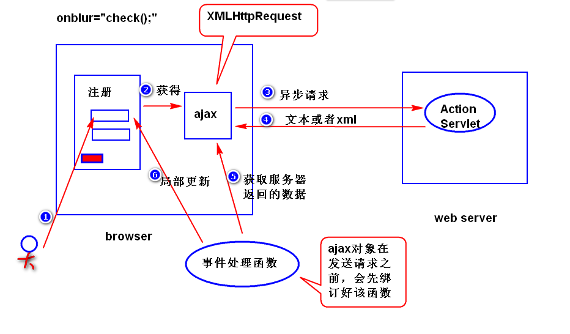
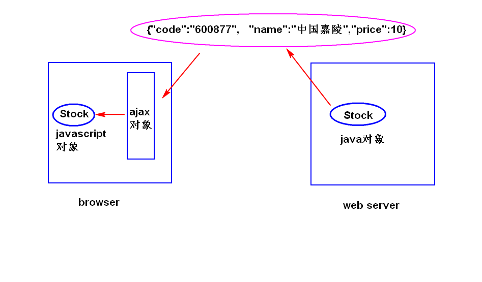

是一种用来改善用户体验的技术，其本质是利用浏览器提供的一个
特殊对象（XMLHttpRequest对象，或者简称为ajax对象）向服务器
发送异步请求，服务器返回部分数据，浏览器利用这些数据对当前页
面做局部更新。整个过程，页面无刷新，不打断用户的操作。
注：
异步请求，指的是当ajax对象发送请求时，浏览器不会销毁当前
页面，用户仍然可以对当前页面做其它操作。

因为历史原因，需要区分浏览器。
function getAjax(){
var xhr = null;
if(window.XMLHttpRequest){
//非ie浏览器
xhr = new XMLHttpRequest();
}else{
//ie浏览器
xhr = new ActiveXObject('MicroSoft.XMLHttp');
}
return xhr;
}
1)onreadystatechange: 绑订一个事件处理函数。
注：
readystatechange事件：当ajax对象的readyState
属性值发生了任何的改变（比如从０变成了１）,就会
产生该事件。
2)readyState:有五个值(0,1,2,3,4),用来获得ajax对象与服务器
通信的进展状况。其中，4表示ajax对象已经获得了服务
器返回的所有数据。
3)responseText:获得服务器返回的文本数据。
4)responseXML:获得服务器返回的xml数据。
5)status:获得服务器返回的状态码。
step1. 获得ajax对象
比如:
var xhr = getAjax();
step2.利用ajax对象发送请求
方式一 发送get请求： http协议 get post
xhr.open(请求类型，请求地址，同步还是异步);
比如:
xhr.open('get','check.do?uname=Sally',true);
xhr.onreadystatechange = f1;
xhr.send(null);
注：
true表示异步，false表示同步(当ajax对象发送请求时，
浏览器会锁定当前页面，用户不能对当前页面做其它操作)。
建议尽量少用同步。
方式二
xhr.open('post','check.do',true);
xhr.setRequestHeader('content-type',
'application/x-www-form-urlencoded');
xhr.onreadystatechange = f1;
xhr.send('uname=Sally');
注:(了解)
按照http协议要求，post请求应该在请求数据包里面
添加content-type消息头。ajax对象默认不会添加该
消息头，所以，需要调用setRequestHeader方法来添加。
step3.编写服务器端的程序
注：服务器端通常只需要返回部分数据。
step4.编写事件处理函数
if(xhr.readyState == 4 &&
xhr.status == 200){
var txt = xhr.responseText;
更新页面...
}
1)什么是缓存问题?
ie浏览器提供的ajax对象在发送get请求时，会比较请求地址
是否访问过，如果访问过，则不再发送新的请求，而是显示第一次
返回的结果。
2)如何解决?
在请求地址后面添加一个随机数。
1)发送get请求
a.为什么会有乱码?
ie浏览器会使用gbk来编码，其它浏览器会使用utf-8
来编码，服务器端默认会使用iso-8859-1来解码，所以
会有乱码。
b.解决方式
step1. 服务器端，统一使用utf-8来解码
URIEncoding="utf-8"
注意：只针对get请求有效。
step2. 客户端，使用encodeURI函数对中文进行编码。
注意: encodeURI函数是javascript内置的函数，
会使用utf-8对中文进行编码。
2)发送post请求
a.为什么会有乱码?
浏览器会使用utf-8来编码，而服务器端会使用iso-8859-1
来解码。所以会产生乱码。
b.解决方式?
request.setCharacterEncoding("utf-8");
是一种轻量级的数据交换格式。
1)数据交换
将要交换的数据先转换成一种与平台无关的数据格式（比如xml）,
然后发送给接收方来处理。
2)轻量级
JSON相对于xml,文档更小，解析速度更快。
1)表示一个对象
{属性名:属性值,属性名:属性值...}
比如:
{"name":"Sally","age":22}
注意：
a.属性名必须使用双引号括起来。
b.属性值可以是string,number,true/false,null,object。
c.属性值如果是string,必须使用双引号括起来。
2)表示对象组成的数组
[{},{},{}...]
1)java对象转换成json字符串
可以使用 jackson api （ObjectMapper）
2)json字符串转换成javascript对象
可以使用 javascript内置对象JSON提供的parse方法。

1)用法
$.ajax({});
{}是一个对象，用来控制ajax对象如何向服务器发送请求，常用
的选项参数有如下几个:
url 指定请求地址 (比如 "quoto.do")
type 指定请求类型 (比如 "get")
data 指定请求参数，有两种格式
第一种 请求字符串形式 （比如 "name=Sally&age=22）
第二种 对象形式（比如 {"name":"Sally","age":22}）
dataType 指定服务器返回的数据类型，有如下几种:
json json字符串
text 文本
html html文档
xml xml文档
script javascript脚本
success 指定一个函数，用来处理服务器返回的数据。
注：服务器处理正常，并且ajax对象已经获得了
服务器返回的所有的数据。
error 指定一个函数，用来处理服务器返回的数据。
注：服务器发生异常。
async 同步还是异步(true表示异步)。
1)作用：向服务器发送异步请求，并且将服务器返回的数据直接添加到
符合要求的节点之上。
2)用法:
$obj.load(url,[data]);
注:
$obj 要操作的节点，是一个jQuery对象。
url 请求地址。
data (可选) 指定请求参数，有两种格式(同上)。
serialize(): 表单异步提交时，生成一个由各个表单域组成的
一个请求字符串。